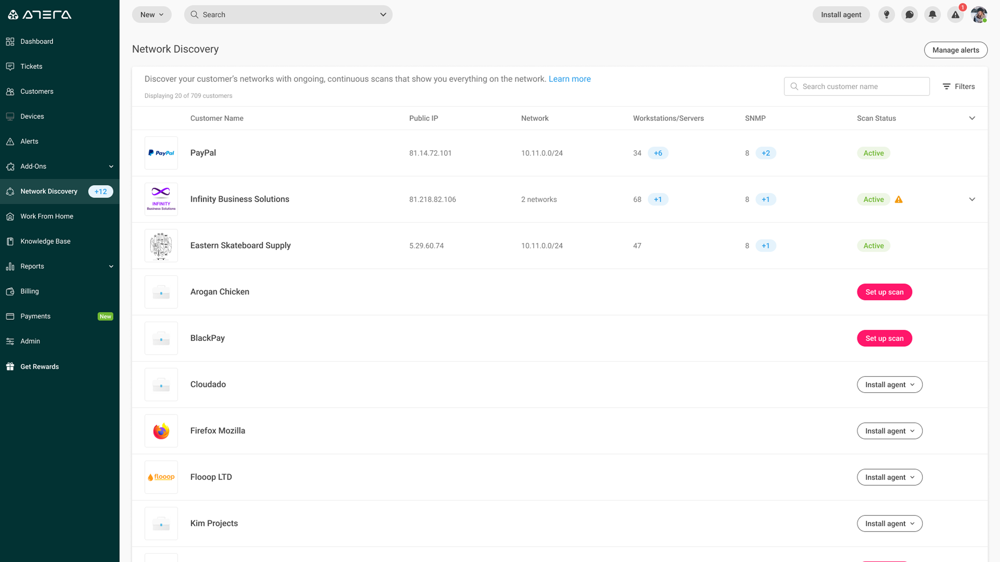
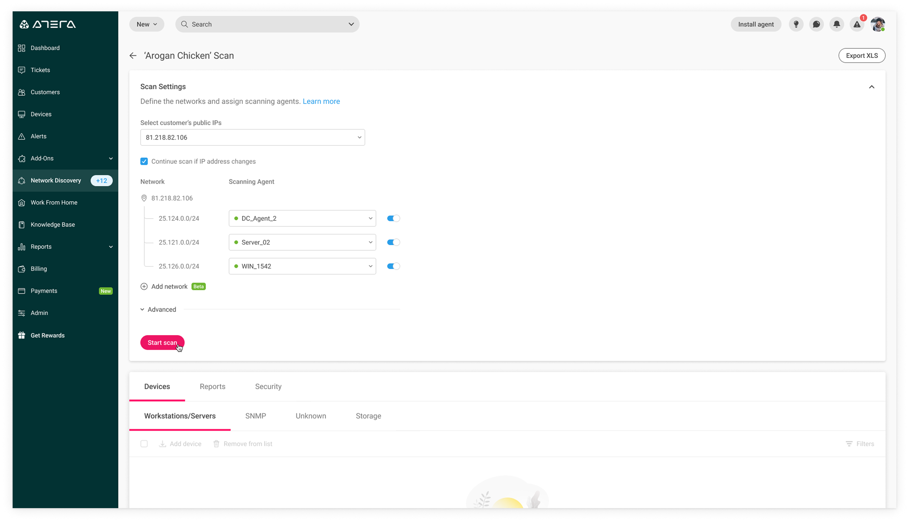
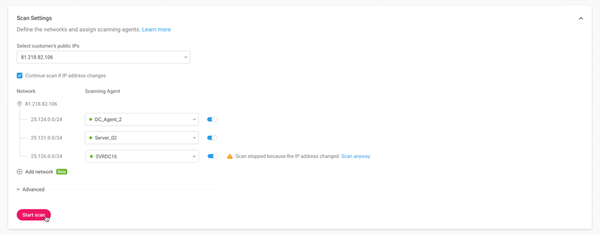
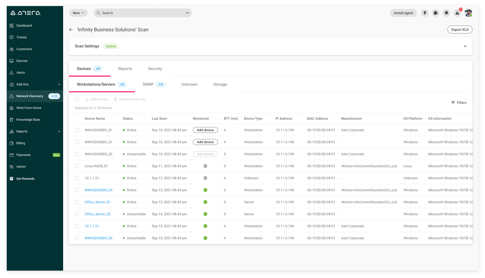
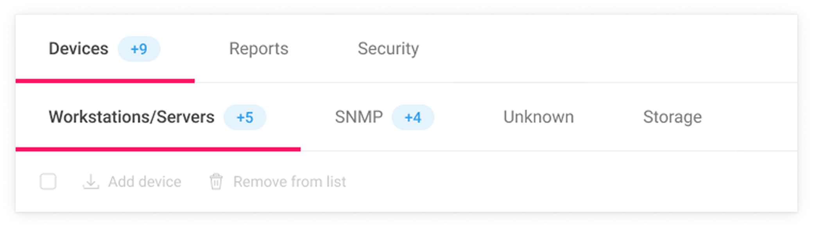
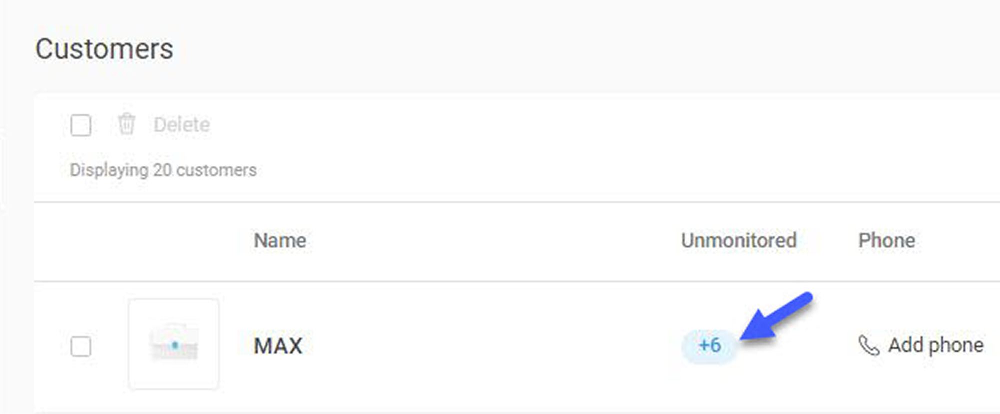
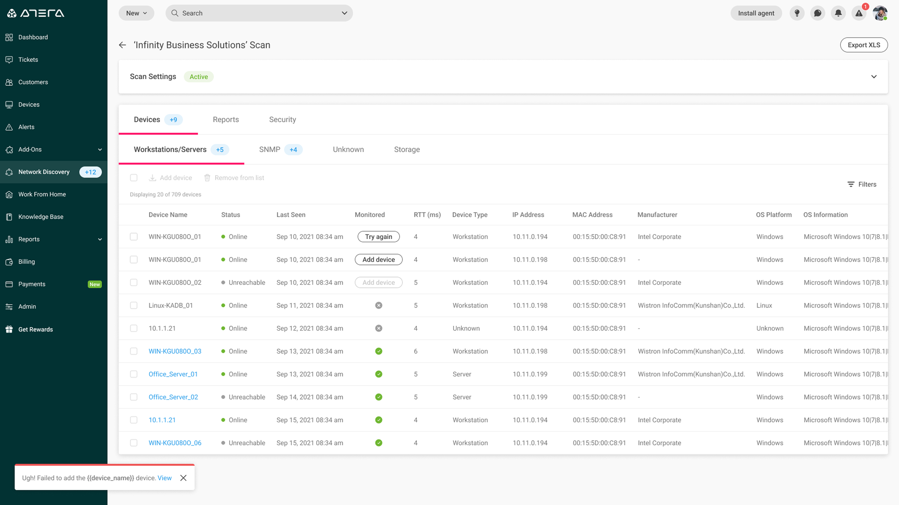
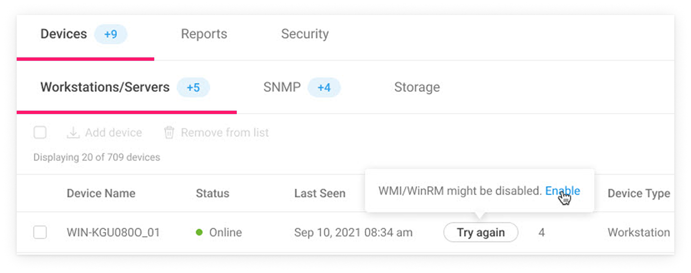
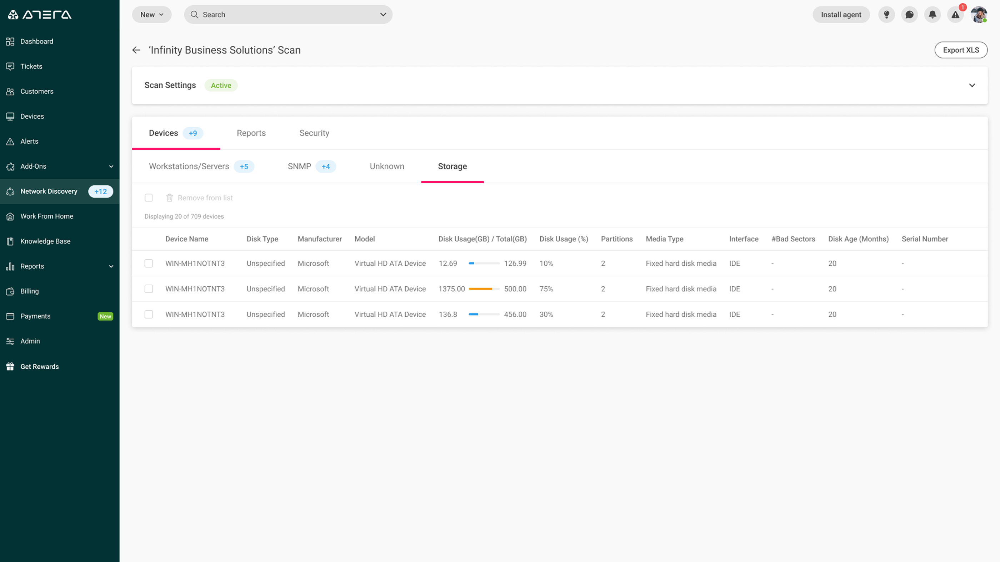
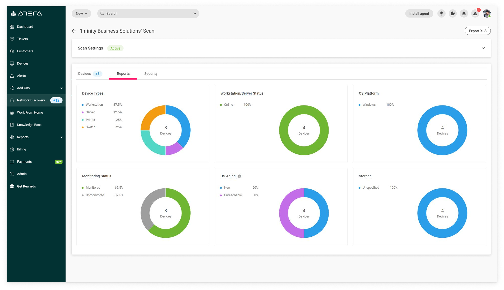

Opening
What is it?
Network Discovery is an add-on provided by Atera which can be purchased in addition to the Atera subscription. Its main use is for the IT technician to keep track of their customer's ever-growing, and ever-changing networks. Successfully doing so is the key to IT support planning, proactive maintenance, and security.
This is where the Network Discovery tool comes in handy. It delivers a complete picture of the customer's networks by identifying its components and creating an inventory, with detailed information on each network device. The IT technician can perform scans on their customers' Workgroup and Domain Controller (DC) networks, to discover and monitor all of their customer networks.
What does it do?
Network Discovery finds all devices connected to a network (WiFi or ethernet). It scans the entire network, identifies its components, and creates an inventory — with detailed information on each network device.
Scans can be performed on both Workgroup and Domain Controller (DC) networks, enabling you to discover all of your customers' networks. Once a scan is activated, it will automatically run in the background at regular intervals (twice a day), so the info stays current.
My role
During this project I functioned as the product designer for two teams: the Billing team and the Network Discovery team. I led the project's design while working closely with the product managers. My work included investigating the data, desk research, prototyping, and working with the dedicated CS manager and technical writer to design the various pages of the feature.
After the redesign
Setting up a scan
The Network Discovery page appears, with a list of all the customers.

The redesigned landing view: all customers listed with their scan status at a glance.
The user selects a customer to set up their Network Discovery scan, and clicks Set up scan.

Scan Settings: the user defines IP ranges, assigns scanning agents per subnet, and can disable individual subnets with a toggle.
After selecting the customer's public IP, the user will see all the scanning agents that can be used on that specific subnet. To prevent a scan on a particular subnet, the user clicks the toggle to disable it.
Problem: moving networks
What if the customer takes their laptop to work at a café when a scan is scheduled? The potential here is that the scan might "find" a lot of unmonitored devices on an irrelevant network.
Our solution: stop the scan if the IP address has changed to prevent scanning of irrelevant networks — and make sure the user is aware of that as well.

When the IP address changes mid-scan, the scan stops and the user is clearly informed why.
Scan results and actions
Scan results include a Devices section that provides detailed information on network devices, a Reports section that displays informative graphs, and a Security section.
Devices
The Devices section includes detailed information on Workstations/Servers, SNMP, and Storage devices, plus it highlights all unmonitored devices by category. Available actions include getting unmonitored devices monitored with one click, as well as filtering and removing devices from the scan results.

The redesigned Servers view, showing discovered devices with real-time status, RTT, device type, and monitoring state.
Displayed information includes:
- Number of unmonitored workstations/servers
- Device Name — clicking it opens the agent console
- Status — Online or Unreachable
- Last Seen — last time the device appeared in a network scan
- Monitored — whether the device has an Atera agent installed
- RTT (Round-Trip Time) — for detecting devices with network slowness
- Device Type, IP Address, MAC Address, Manufacturer
- OS Platform, OS Information, OS Age (DC scans only)
Monitor unmonitored devices
Atera highlights the number of unmonitored devices on a network — a call to action for the IT technician to proactively monitor the network and its devices.

Unmonitored device counts shown as badges on each device category tab.
The number of unmonitored devices can also be found on the Customers page.

Unmonitored device counts surfaced directly on the Customers page, so technicians don't have to drill in to know there's work to do.
Here's the flow showing how the user adds devices to their monitored devices list. The user selects the unmonitored device and clicks the Add device button.
Problem: when the installation fails
What if the agent installation didn't work? This could happen for various reasons — and besides informing the user that there's a problem, how do we let the user know what the issue is?

Depiction of an unsuccessful installation.
My suggestion was to change the button's copy to Try again to let the user know that the agent installation didn't work. In order to provide another layer of explanation, we added a tooltip with a link to the relevant knowledge base article.

"WMI/WinRM might be disabled" — the tooltip explains the likely cause and links to the fix.
Sorting & filtering
The scan results can be sorted and filtered by various criteria — here's what that looks like:
Storage devices
The Storage category (relevant only for domain controller scans) displays detailed information on network storage.

Storage tab showing disk usage and health data for discovered devices.
Reports
The Reports section displays a number of useful graphs so you can see network information at a glance.

Device Types, Workstation/Server Status, OS Platform, Monitoring Status, OS Aging, and Storage — all surfaced as donut charts.
Wrapping it up
Some data
Network Discovery was a big success. As one user I spoke to told me: "Network Discovery was the reason I purchased Atera."
300%
improvement in weekly & monthly active users
90%
trial-to-purchase conversion rate
5→3%
churn reduction for ND subscribers
Users who trialed Network Discovery ended up purchasing it — which also drove Atera subscriptions, since it can't be purchased standalone. We also doubled the number of trials during this period.
Closing thoughts
I think this is a good example of design work done on a complex system. My main challenge was how to present the aggregated data — while keeping in mind the visualization of the scan settings and balancing the two.
The UI was mostly based on a design system which I helped develop. Having a design system in place allowed me to focus on the user experience and move quickly through this project.